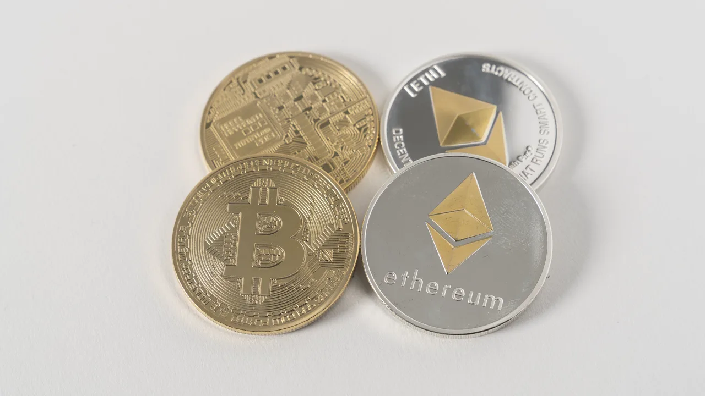

비트마인 이머전 테크놀로지스 BMNR을 볼 때 숫자가 워낙 커서 판단이 흐려지기 쉽습니다. 회사는 2026년 5월 25일 기준 539만404 ETH를 보유했고, 이는 전체 이더리움 공급량의 4.47%라고 밝혔습니다. 현금과 기타 암호화폐, 이른바 문샷 투자까지 합친 금액은 123억달러로 제시됐습니다. 한 회사가 이렇게 빠른 속도로 이더리움을 모으는 장면은 드뭅니다. 하지만 주주가 가장 먼저 봐야 할 질문은 “ETH를 얼마나 많이 샀나”가 아니라 “내 한 주가 대표하는 ETH와 순자산가치가 실제로 늘었나”입니다.
BMNR은 원래 비트코인 채굴과 장비·인프라 성격이 강한 회사였습니다. 그런데 2025년 3분기부터 사업 설명의 중심이 이더리움 블록체인과 ETH 트레저리로 바뀌었습니다. SEC 10-Q에서도 회사는 기존 디지털자산 사업을 확장해 이더리움 중심의 자산 경량 모델, 자문 서비스, 디지털자산 트레저리 관리로 초점을 옮겼다고 설명했습니다. 그래서 이제 이 회사를 채굴주로만 보면 핵심을 놓칩니다. BMNR은 주식시장에서 거래되는 이더리움 보유 플랫폼에 더 가까워졌습니다.
이런 구조는 매력과 위험이 함께 큽니다. ETH 가격이 오르면 회사의 순자산가치가 크게 올라갈 수 있고, 스테이킹을 통해 보유 자산에서 현금성 수익도 만들 수 있습니다. 반대로 ETH 가격이 내려가면 회계상 손실과 주가 하락이 동시에 커질 수 있습니다. 게다가 ETH를 더 많이 사기 위해 주식을 계속 발행하면 총 보유량은 늘어도 기존 주주의 몫은 희석될 수 있습니다. BMNR 주주가 지금 궁금해해야 할 부분은 바로 이 균형입니다.
총 ETH보다 주당 순자산가치가 먼저입니다

비트마인이 발표하는 ETH 보유량은 강한 헤드라인을 만듭니다. 539만 ETH라는 숫자는 단순 비교로 보면 세계 최대 이더리움 트레저리라는 설명에 힘을 줍니다. 회사는 5% 보유 목표인 “Alchemy of 5%”의 89% 지점까지 왔다고 말합니다. 이 표현은 시장의 관심을 끌기에 충분합니다. 그러나 주식 투자자는 회사 전체 지갑이 아니라 자신이 보유한 주식 한 주의 몫을 봐야 합니다.
주당 순자산가치는 단순히 ETH 수량에 ETH 가격을 곱한 값에서 끝나지 않습니다. 현금, 비트코인 203개, Beast Industries 지분 2억달러, Eightco Holdings 지분 9천5백만달러 같은 기타 자산을 더하고, 부채와 잠재 희석을 빼야 합니다. 또 유통 주식 수가 얼마나 빠르게 늘어났는지도 봐야 합니다. 2026년 4월 13일 기준 회사의 보통주 발행주식 수는 5억3,762만8,819주였습니다. 총 ETH 보유량이 커져도 주식 수가 더 빠르게 늘면 한 주당 ETH는 기대만큼 늘지 않습니다.
이 점이 스트래티지 MSTR과의 비교에서 중요합니다. MSTR 투자자는 비트코인 보유량뿐 아니라 주당 비트코인, 전환사채, 우선주, 발행 조건을 같이 봅니다. BMNR도 마찬가지입니다. ETH 보유량 증가 속도만 보면 이야기가 쉽지만, 주당 순자산가치가 늘지 않으면 기존 주주의 체감 가치는 약해질 수 있습니다. 그래서 BMNR의 다음 체크리스트는 “이번 주에 ETH를 얼마나 샀나”보다 “그 매입이 주당 ETH와 주당 순자산가치를 높였나”입니다.
특히 ETH 가격이 급락했을 때 회사가 낮은 가격에 매입한다고 발표하면 보기에는 훌륭합니다. 하지만 그 매입 자금이 어떤 가격의 주식 발행에서 나왔는지, 혹은 현금으로 감당했는지에 따라 결과는 달라집니다. 싼 ETH를 샀더라도 더 싼 가격에 주식을 많이 발행했다면 희석 부담이 커질 수 있습니다. BMNR은 이제 자산 규모보다 자본 배분의 정교함으로 평가받아야 합니다.
MAVAN은 이더리움 보유를 수익 사업으로 바꾸는 장치입니다
관련 영상
비트마인 BMNR과 이더리움 트레저리 전략을 설명하는 한국어 롱폼 영상
BMNR이 단순 보유 회사와 달라지려면 스테이킹 수익이 중요합니다. 회사는 2026년 5월 25일 기준 471만2,917 ETH를 스테이킹하고 있다고 밝혔습니다. 발표 당시 ETH 가격 2,134달러 기준으로 약 101억달러 규모입니다. 회사는 자체 스테이킹 플랫폼인 MAVAN을 기관급 스테이킹 인프라로 설명하며, 보유 ETH가 완전히 스테이킹되고 7일 연율 수익률 2.75%가 적용될 경우 연간 2억7,600만달러의 보상이 가능하다고 제시했습니다.
이 숫자는 BMNR의 핵심 전환점입니다. ETH를 그냥 보유하면 회사 가치는 ETH 가격에 거의 그대로 흔들립니다. 그러나 스테이킹을 통해 꾸준한 보상을 얻으면 회사는 보유 자산에서 운영 수익을 만들 수 있습니다. SEC 10-Q에서도 2026년 2월 28일 종료 분기 매출 1,104만1천달러 중 스테이킹 매출이 1,020만1천달러로 가장 컸습니다. 매출의 중심이 이미 채굴보다 스테이킹 쪽으로 이동하고 있다는 뜻입니다.
다만 스테이킹 수익을 은행 이자처럼 안정적으로 보면 곤란합니다. 보상률은 이더리움 네트워크 참여자 수, 검증자 수, 수수료 환경, 슬래싱 리스크, 운영 안정성에 따라 달라질 수 있습니다. ETH 가격이 하락하면 달러 기준 보상액도 줄어듭니다. 또 MAVAN이 외부 기관 고객까지 끌어들이려면 보안, 커스터디, 규제 대응, 성능 기록을 모두 증명해야 합니다. BMNR이 스테이킹 회사처럼 평가받으려면 “우리가 많이 스테이킹한다”보다 “실수 없이, 규제 리스크를 관리하면서, 반복 가능한 수익률을 만든다”가 필요합니다.
그래도 이 방향은 주목할 만합니다. BMNR이 보유 ETH를 잠자는 자산으로 두지 않고 검증자 네트워크와 기관용 인프라로 연결한다면, 단순 트레저리 프리미엄보다 더 높은 사업성을 주장할 수 있습니다. 주주는 앞으로 스테이킹된 ETH 비율, 실제 7일·30일 수익률, 슬래싱 사고 여부, 외부 고객 유입 여부를 봐야 합니다. 이 네 가지가 좋아져야 MAVAN은 슬로건이 아니라 사업이 됩니다.
희석은 BMNR을 보는 가장 현실적인 비용입니다
BMNR의 빠른 ETH 축적은 공짜로 일어나지 않습니다. 회사는 2025년 이후 공모, 사모, ATM 프로그램을 활용해 유동성을 강화했고, ETH 매입과 전략 투자를 진행했습니다. SEC 10-Q에는 2026년 2월 28일 기준 ATM 프로그램의 잔여 판매 가능 금액이 약 671만달러라고 나옵니다. 또 2026년 2월 28일 종료 6개월 동안 가중평균 보통주는 3억8,943만4,545주였고, 2026년 4월 13일 실제 발행주식 수는 5억3,762만8,819주였습니다. 주식 수가 크게 움직인 회사라는 점은 반드시 봐야 합니다.
회사가 주식을 발행해 ETH를 사는 전략은 가격 조건이 좋으면 기존 주주에게 이익이 될 수 있습니다. 시장가격보다 높은 프리미엄으로 자본을 조달해 ETH를 싸게 사면 주당 순자산가치가 늘어날 수 있습니다. 반대로 주가가 약할 때 발행을 반복하면 주주 몫은 얇아집니다. 그래서 희석은 BMNR의 가장 현실적인 비용입니다. 이 회사는 ETH 가격뿐 아니라 자기 주가와 발행 조건도 투자 성과를 좌우합니다.
10-Q의 손익계산서도 이 위험을 보여줍니다. 2026년 2월 28일 종료 분기 순손실은 38억1,841만3천달러였고, 6개월 순손실은 90억2,250만8천달러였습니다. 이 가운데 상당 부분은 디지털자산 보유와 관련한 미실현 손실이었습니다. 회사는 조정 손실도 따로 제시했지만, 주가가 움직일 때 시장은 회계상 손실과 자산가치 변동을 같이 봅니다. ETH 가격이 낮아지는 구간에서는 “장기 보유”라는 말만으로 손실 충격을 모두 덮기 어렵습니다.
투자자는 앞으로 세 가지 표를 나란히 놓아야 합니다. 첫째, ETH 보유량과 ETH 가격입니다. 둘째, 발행주식 수와 잠재 희석 물량입니다. 셋째, 스테이킹 매출과 운영비입니다. 이 세 표가 동시에 좋아지면 BMNR은 ETH 트레저리 이상의 회사로 보일 수 있습니다. 하지만 ETH 보유량만 늘고 주식 수가 더 빨리 늘거나, 스테이킹 수익보다 주식보상과 운영비가 더 빠르게 늘면 주주가 느끼는 가치는 약해질 수 있습니다.
규제 호재와 ETH 가격은 같은 방향으로만 움직이지 않습니다
BMNR의 투자 논리는 이더리움이 월가 토큰화, 스테이블코인, 인공지능 에이전트 시대의 중립적 결제·검증 인프라가 된다는 생각에 기대고 있습니다. 회사도 보도자료에서 월가의 블록체인 토큰화와 에이전트형 인공지능 시스템이 공개적이고 중립적인 블록체인을 필요로 한다고 설명했습니다. 규제 환경이 우호적으로 바뀌면 기관 자금이 ETH로 들어오는 길이 넓어질 수 있습니다. 이 부분은 BMNR의 상승 시나리오에서 중요합니다.
하지만 규제 호재가 곧바로 주가 안정성을 의미하지는 않습니다. 디지털자산 규제는 속도와 세부 조항에 따라 거래소, 수탁사, 스테이킹 사업자, 트레저리 회사에 다르게 작용합니다. 코인베이스 같은 인프라 기업에는 거래량과 수탁 잔고가 중요하고, 스트래티지에는 비트코인 조달 구조가 중요하며, BMNR에는 ETH 가격과 스테이킹 허용 범위, 회계 처리, 발행을 통한 매입 전략이 중요합니다. 같은 암호화폐 호재라도 회사별로 이익이 들어오는 경로가 다릅니다.
또 하나의 변수는 유동성입니다. 회사는 BMNR이 미국 주식 중 거래대금 기준 193위 수준이고 5일 평균 일일 거래대금이 5억7,200만달러라고 밝혔습니다. 유동성은 장점입니다. 큰 자금이 들어오고 나갈 수 있으므로 자본조달과 투자자 관심을 끌기 쉽습니다. 동시에 유동성은 변동성을 키울 수도 있습니다. ETH 가격, 톰 리 의장 메시지, 규제 뉴스, 공매도와 옵션 흐름이 겹치면 주가는 순자산가치보다 훨씬 크게 움직일 수 있습니다.
결론적으로 BMNR은 단순한 이더리움 베팅이 아닙니다. ETH 보유량, 주당 순자산가치, 스테이킹 수익, 희석 비용, 규제 방향이 모두 맞아야 설득력이 생기는 구조입니다. 지금 독자가 가장 궁금해해야 할 질문은 “BMNR이 ETH를 얼마나 더 살까”가 아닙니다. “더 사는 과정에서 내 한 주의 ETH 몫과 스테이킹 수익이 실제로 늘어날까”입니다. 이 답이 분기마다 숫자로 확인될 때 BMNR은 테마주에서 트레저리 플랫폼으로 한 단계 더 평가받을 수 있습니다.